Free to forkNo licence and no copyright claim: build this game under your own name, or lift one idea from it. Why?
Game overview
AAL Bunkerships is a 2D side-view tactics game about clumsy, inventive physics soldiers and the mobile fortresses that carry them into battle. Every bullet is a real object, every wall can be dug through, and the best moments are the ones nobody planned.
Above the battles sits a turn-based grid map of the region, in the spirit of Advance Wars, where you move squads and bunkerships, scout through fog, set traps and decide where and how to strike. Above that sits a whole galaxy, worked through one job at a time as an agent of a galactic colonization agency.
It takes Cortex Command's physics combat, Advance Wars' grid, the fort under fire from Forts, FTL's ship systems and XCOM's squad preparation, and fixes the one thing they share: when the match ends, everything you built is thrown away. Here, nothing is. Your fleet, your victories and your galaxy stay.
Target audience
Players who love tactical sandboxes like Cortex Command, Advance Wars, Forts, FTL and XCOM, and who come out of a match absorbed but tired, and strangely empty.
They already get plenty of challenge. What they're hungry for is work that counts: a base worth caring for, a fleet with a history, a reason to play with finesse instead of rushing to the end.
The interface is deep (squads, ships, loadouts, a strategy map), but every part is streamlined: chores are automated or optional, nothing is timed against you, and the game pauses anywhere.
Game's purpose
Play and creativity: the inventive, often hilarious joy of physics combat, where a plan can work in ways nobody predicted.
Competence: commanding squads, designing ships and watching your ideas hold up under fire.
Meaning and continuity: every battle moves something forward, and everything you build lasts.
It deliberately avoids draining ease (the slow economy is kept out of the fights), autonomy (no job is forced) and rest (stop after any mission and lose nothing).
Core concept
Strategy games usually end in a fair, balanced match that funnels into a contest of elimination, then resets to zero. All the friction, and none of it counts.
AAL Bunkerships replaces the match with a service that never ends: clearing threats from a galaxy for a colonization agency, one bounty at a time. A victory advances the galaxy; a failure only delays it.
Progress never goes backwards, your fleet persists, and you start with more than you need, so you play for the fight itself, not to scrape by.
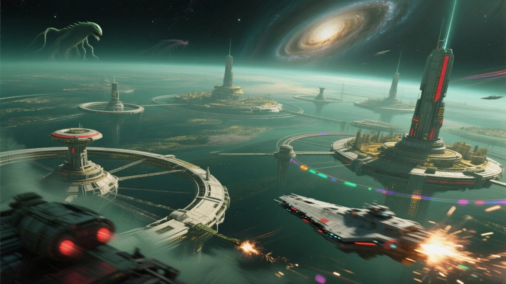
"The war at home ended a long time ago. Out here, past the settled stars, somebody still has to clear the way."Agency recruitment briefing
Lore & story
The Golden Age, and the rest of the galaxy
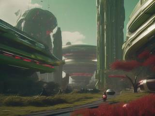
The game is set in the AAL universe, in its Golden Age. The Eradication Wars, fought between humans in a small pocket of space around the Sun, are long over. Their winners became Homo mugen: immortal, endlessly adaptable people who live alongside friendly aliens and machines in a kind, abundant civilization.
Now that civilization is spreading into the rest of the Milky Way, and that's where you come in. You're an agent of a galactic colonization agency, one of countless agents who prepare star systems for settlement and keep them safe.
Who's out there
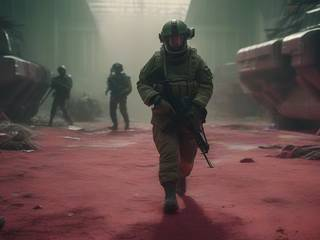
The wider galaxy isn't empty. Besides alien peoples who are glad of the company, it holds escapees and remnants of the Eradication Wars, renegades, would-be dictators and plain thugs who have grabbed a star system for themselves and run it on piracy, vandalism and plunder. Here and there, pockets of space monsters lurk as well, though the truly enormous ones live beyond the galaxy.
These commanders rarely fight in person. They run their forces remotely through a Command Core, and taunt you like 90s cartoon villains while they do it.
Gold Apron
Everyone, you and your enemies alike, shops at the same place. Gold Apron is an anomaly: a space monster that turned symbiotic, an ancient automated hive of machines running a galaxy-wide catalog store. Companies, AAL among many others, submit blueprints. Apron manufactures, packs and ships whatever anyone orders, from a lawnmower to a battle tank, to anyone at all.
It trades peacefully, defends itself without mercy and covers itself in gold for no reason anyone has found. Nobody can reason with it, and nobody needs to, because it's far too convenient. In civilized space, customs officers turn back anything harmful.
The troops it sells are puppets: bodies without minds, bound to the account that bought them. They cry out when hit, but only the way a machine shows a warning light. Nobody in the fight is a real victim.
The job right now
A bounty board full of jobs, a hangar full of ships and the next region waiting. Clear it, then the next one, until the galaxy is secure. Then a small pioneer team heads for the next galaxy, which has quirks of its own.
Controls & interface
You directly control one soldier at a time, the way you would in a shooter, and can switch to any other whenever you like. The rest of the squad follows simple orders: sentry, patrol, go there, follow, evacuate, use that, ambush, sleep.
Move
A / D
Move left and right, or turn around
W
Jump, jetpack, or up in zero gravity
S
Crouch, drop down, or down in zero gravity
Space
Directional dash or boost
Shift
The body's special: focus, sprint, scan…
Fight
Mouse
Aim; the camera leans the way you look
Left click
Use what you're holding
Mouse 4
Its secondary function
Mouse 5
Quick melee, quick item or quick tool
R
Reload
1–9
Quick-equip weapons, items and abilities
Items
F
Tap to pick up, hold to scoop everything nearby
G
Tap to drop, hold to wind up a throw
E
Use or interact
Right click
Tactical pie menu and inventory
Q
Cancel, stop, or grab on to a ledge
Squad & menus
Z / C
Previous or next soldier; both for free select
X
Buy menu and mission menu
Wheel
Zoom in for a closer look
Esc
Pause menu, everywhere
Soldiers are mostly humanoid, but not always: some crab-like bodies trade a human's flexibility for abilities of their own. Anyone can carry several weapons, dual-wield, wear gear, ride as a passenger, duck to half height or go prone, and pick up, drop or throw anything they're holding. The view is pulled back far enough to see the fight and close enough to read each soldier.
Ammunition is limited but plentiful, and resupply is in the buy menu: premade orders arrive fast, custom ones take a little longer. How much you can field is set by your Command Core: four soldiers plus one extra unit of any size, two vehicles or robots, and two aircraft that come and go from off screen.
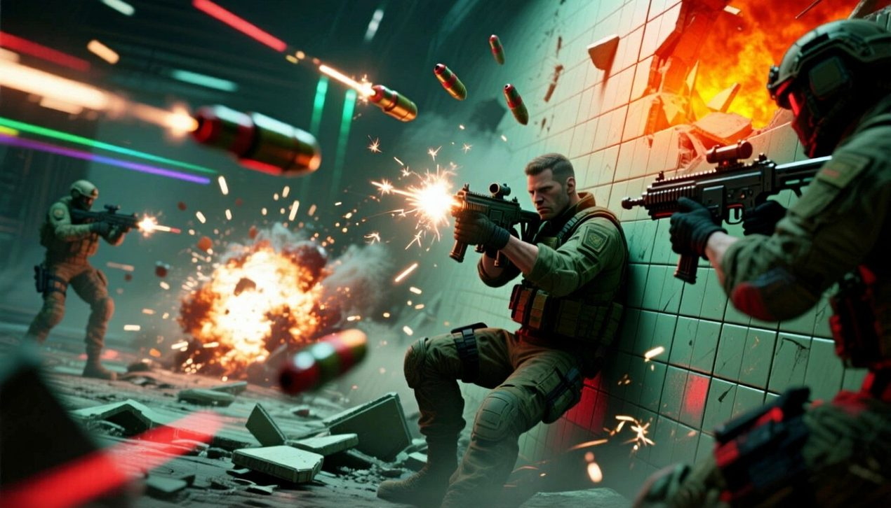
"Every soldier, gun and chunk of wall is a physics object. Blow out the floor, and whatever stood on it comes down with it."
Game layers
Four layers, each inside the one above it. The battles are the fun; everything above them exists to make the battles count.
The galaxyThe agency's job: secure it, then move on to the next. Never ends.
A regionA turn-based grid map, up to four factions, played to the end.
A missionA short chain of battles, built from a template.
A battleSide-view physics combat with your squad and bunkership.
01 · Moment-to-moment
A squad made of physics
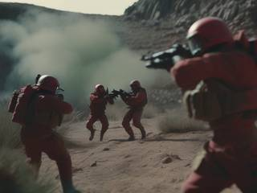
Side-view combat where everything is a physical object. You lead from the front with one soldier while the others hold, follow or flank.
Firefights are slow enough to think in and chaotic enough to surprise you: cover gets blown apart, a grenade bounces back, a jetpacker lands on the wrong ledge. Between fights, the same hands work your bunkership: repairing, rearranging modules, swapping loadouts.
02 · Low metagame
A region, from landing to victory
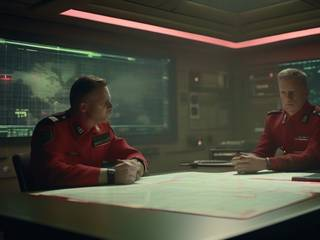
A region is a grid map of somewhere: a planet's surface, its orbit, deep space, the crust, or even the molten core. Up to four factions share it, plus wildlife and bandits who belong to nobody.
You arrive with an injector ship that punches into the ground and becomes your first base. Then you expand, build bunkerships, scout, set traps and hunt for the enemy's Command Core. Every region can be won by direct assault, slow attrition, guerrilla raids, stealth or any mix of them.
Lose a fight and you pull back to rethink your fleet. In a chain of regions, the ones you've cleared stay cleared.
03 · High metagame
The agency, the hangar and the galaxy
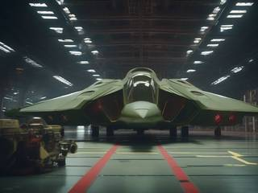
The goal that never runs out: securing a galaxy for settlement, one bounty at a time, then moving on to the next. Jobs wait on a bounty board, where you accept them, save them for later or leave them to another agent.
Your fleet lives in an enormous hangar, built from your own blueprints. You name your ships and keep a journal of their operations. Ships and squads can be lost; you can't.
Between jobs, peaceful regions of your own play like a calm 4X game: mine, build, ship supplies to the front, then restore the land to life. Each finished galaxy leaves a generated artwork, a memento of that job, unlike anyone else's.
04 · Practical game flow
One evening, start to finish
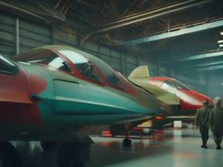
Launch the game to a slowly shifting montage of battle scenes. Open the bounty board and pick a job that fits the evening you have: a ten-minute rescue, or a region you'll work on for a few nights.
Prepare in the hangar, where time stands still, so you can tinker for as long as you like. Launch, fight, and stop at the end of any mission, or quit from the pause menu at any moment and the game saves itself. Nothing decays while you're away, and nothing nags you to come back.
Game modes
There's one game, not a menu of modes. Jobs differ in how long they take and how intense they are, so you choose by the time and the mood you're in.
Job shape
What happens
Length
Feel
Single battle
One fight: a squad raid, a defense, a bunkership duel
Minutes
Sharp
Gauntlet
Battles back to back, up to about ten stages, with checkpoints
Under an hour
Rising
Forked battles
Branching battles where you pick the route, the way FTL or Star Fox 64 does
An hour or two
Varied
Single region
One overworld map, played to the end
An evening or more
Strategy with sharp fights
Chained regions
Several regions in a row; each one cleared stays cleared
Several evenings
A long campaign
Forked regions
Branching routes through several regions
Several evenings
A long campaign, your route
Peaceful region
Mining, industry and restoration, no combat
Five minutes to an hour
Calm
The "endgame" is what you make of it: challenge runs with restrictions you set yourself, or easy runs just to enjoy the flow of a good fight.
Features & mechanics
Foundations
Physics on a budget
Physics combat is expensive: dozens of soldiers, projectiles, explosions and debris at once, and the game must never stutter. So the technology shapes the design from the very first line.
Each soldier is one sprite moved by physics forces, not a ragdoll of limbs. Projectiles are fairly slow and effects are few, because many will fire at once. Terrain is tiles that can be partly destroyed, down to an indestructible bedrock.
And there are no bottomless pits or instant deaths. In the sky, in orbit or at sea, everything carries an emergency float that brings it back up, so even a gun thrown overboard drifts back within reach.
Before any gun exists, the standards do: one weapon system that can represent any firearm, blade, shield, tool or grenade; one character system for humans and non-humans alike; and standard elements (fire, smoke, electricity, acid, water, oil, plasma) and status effects that behave the same everywhere. Each link below depends on everything to its left:
The computerHow many bodies and bullets can exist at once
The premiseSquads and fortresses in a galaxy-wide service
Natural lawsElements, materials, floats, the Command Core
EnvironmentsTiles, bedrock, gravity, gas and liquid zones
A bunkership is a base, a factory and a barracks that carries your squads, guns and machines straight into the fight, whether it drives, sails, flies, dives, drills or crosses space.
Every system on board is a physical module you can see, walk to and shoot: the reactor, airlocks, hangars, heat sinks, turrets, silos, sensors, escape pods, squad banks, the maintenance network. If it exists, it works, and that's its capacity. So a bigger ship has more to maintain and more weak points, like the exhaust port on a certain moon-sized battle station. Getting rich doesn't make the game easier or harder; it changes its flavor.
Ship duels are battles of their own. The faster ship chooses the range, and both sides fight across the gap with squads and small craft. A ship can flip itself end to end after a loudly announced countdown, turning a salvo meant for its front onto its armored back. A losing ship can try to warp away while the winner's reactor pins it in place. Anything friendly inside the warp zone comes along, and enemy boarders are left falling where the floor used to be.
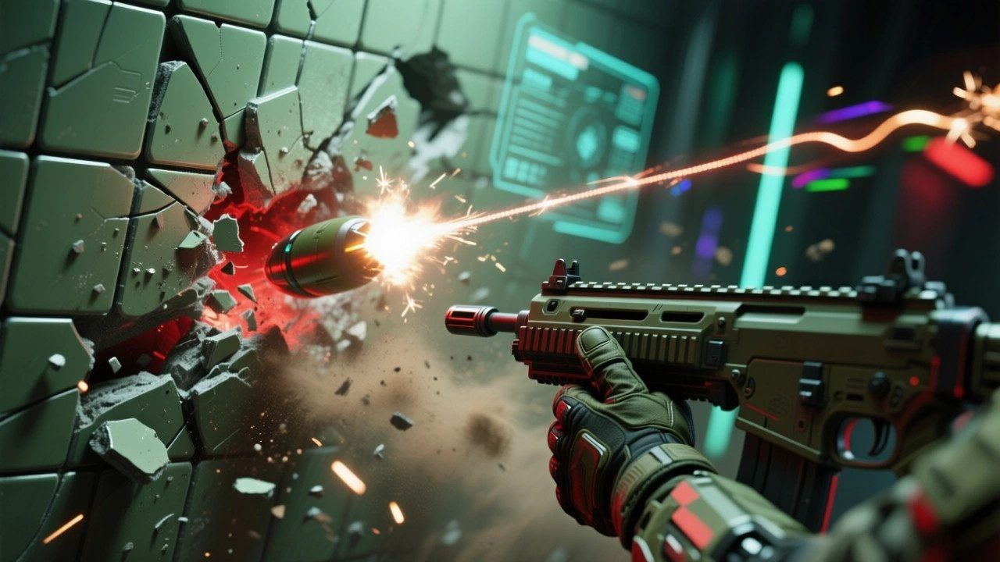
"Every machine on board is real. Find the one they forgot to armor."
A limit with a reason
The Command Core
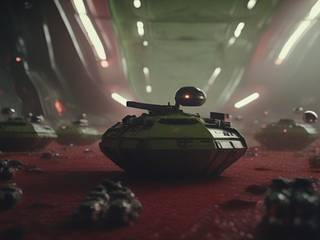
Every faction's forces in a region run through a Command Core: a hardy metal ball, the king piece of the board. Destroy it or steal it, and that faction is out of the region.
It also explains the limits. The Core has a fixed processing capacity, like a party of six creatures in Pokémon. Each ship, squad and injector takes a share of it, and that decides how much you can bring. Anything that strays outside its influence goes limp until it's towed back. The computer's real hardware limit becomes a law of the world instead of an arbitrary rule.
The Core can sit in an armored cradle deep underground, ride aboard a bunkership or travel with a sneaking squad. It can even be faked: a convincing decoy, maybe booby-trapped, means the enemy's princess is in another castle.
Content that multiplies
Brands instead of factions
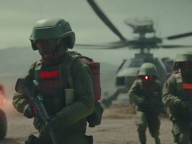
There are no fixed armies to pick from. There are brands: complete military kits sold through Gold Apron, each with its own style and its own way of playing, covering soldiers, weapons, vehicles, turrets, ship modules and gear.
Before a campaign you choose your licences. One brand gets the best discount, each extra one costs more, and the all-brands pass is the priciest and slowest of all. Now and then Apron has a hiccup that makes a brand or an item unavailable to you for a mission, which is a good reason to keep a second setup ready.
Because every brand is built on the same standards, every brand's gear works with every character and every other brand. A new item doesn't just add one thing; it combines with everything already there. Modders and creators can add items, or whole new brands, the same way.
The grid above the battles
Move first, decide after
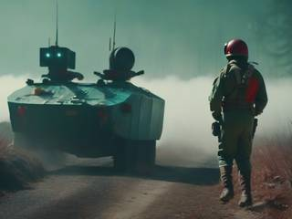
Regions play on a square grid, as in Advance Wars, with one twist: you move a unit first, then choose what to do based on where it ended up. A ghost trail shows how far it can go.
The map starts dark. Scouts, flares, towers and spy satellites push back the fog, and everything leaves a signature: a big mining operation is loud, hot and visible to everyone, and so is every delivery you order from Apron, unless you pay for scan-proof packaging. Stealth is a real choice: a quiet hidden base can't go shopping, so it builds in secret from supplies smuggled in from a loud one.
Battles start when units meet on neighboring tiles. A faction next door can watch through a disposable drone and slip one sneaky delivery into someone else's fight. And factions leave each other "messages": a trap with a real prize inside, a gift that's really a setup, a taunt, a distraction.
Generated, not scripted
Missions from templates
Missions are built from templates and chained together: prisoner hunts and rescues, hits, recon, deliveries, anomalies to explore, infiltration and sabotage, assaults and defenses, chases and escapes, bunkership against bunkership.
Each template is a short chain of battles with a few branches, filled from the generator's parts: the region, the opponent, their brands, the weather, what's guarded and where. An infiltration, for example:
Gather intelA recon run, a spy satellite, or go in blind
Get past the lineCheckpoints, wildlife, hazards, tripwires
Inside the targetSteal, sabotage, rescue, download or plant
Get outBack the way you came, or by float if it all goes loud
If an alarm trips, their alpha squad comes hunting through the corridors, and the mission changes shape. Add one new template, tile type or hazard, and it turns up across every campaign.
Opponents with personalities
Commanders built from sins and virtues
Every rival commander follows one of the seven deadly sins or its opposite virtue. It shapes how they design bases and ships, equip squads, spend money and fight. Neither side is better: each has a strength, and a weakness to find.
Sin
Virtue
Pride. Perfect, symmetrical bases and elite units. Weak spot: does everything by the book. Set a trap, then another one next to it.
Humility. Cheap, practical designs and random experiments. Weak spot: never commits to anything, so it can be overpowered.
Greed. A core room decked out to insane levels; scavenges everything. Weak spot: half-equipped attack squads, thin outer defenses, distracted by small prizes.
Generosity. Strong outer defenses and well-equipped, cherished units. Weak spot: a cozy, barely guarded interior. Infiltrators feast.
Lust. Fast, passionate strike teams that hunt you and steal. Weak spot: neglects its bases; the core is often unguarded.
Chastity. Slow, methodical, heavily fortified. Weak spot: can't keep up with fast, daring raids.
Wrath. Sudden, overwhelming frontal assaults. Shock and awe. Weak spot: forgets its flanks; easy to bait with taunts and ambush.
Patience. Traps, stockpiles, harassment and a superweapon in the works. Weak spot: slow to act. Sabotage the wonder weapon.
Gluttony. Wild variety, daring rushes, goes for the biggest target. Weak spot: spends money as soon as it has it; falls for big distractions.
Moderation. Balanced and steady, with no glaring exploits. Weak spot: predictable, and never changes its designs.
Envy. Ploys, jamming and economic sabotage to drag you down. Weak spot: weak in a real fight; its ploys can be guessed.
Admiration. Mirrors whoever is the biggest threat. Weak spot: always one step behind, and reveals its next designs.
Sloth. Turtles behind armor, artillery and snipers, with deep reserves. Weak spot: baffling holes in its defenses and whimsical retreats.
Diligence. Relentless, steady pressure; very alert. Weak spot: single-minded and telegraphed. A prepared defense picks it apart.
Up to four factions can share a region, allied or betraying each other, with wildlife, bandits, rogue machines and the odd space monster turning up as hazards or chances. When you lose a fight, the commander regroups and reshuffles, so a second attempt is never a repeat of the first.
Because opponents are built from behaviors anyone can fall into, never from real groups of people, nobody real is the villain.
Friction moved out
The hangar and the peaceful regions
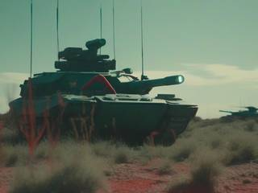
The slog of strategy games (gathering, stockpiling, building up an economy) doesn't belong in a fight, so it lives somewhere else. Peaceful regions play like a calm 4X game: survey, set up industry, build ships from your blueprints and send them to the front. When the land is spent, you restore it to life, the way Terra Nil does, and move your equipment to the next site.
You start with more than you need. The hangar holds default designs and ready ships for at least ten failed campaigns in a row. The lesson isn't scraping by; it's that you can't brute-force every problem.
After a won campaign your ships and squads come home, and whatever you didn't build on site is refunded. What you did build stays behind as ruins, and when that region later becomes a peaceful one, those ruins are waiting to be explored and reclaimed.
A galaxy that remembers
Nothing un-happens
Time only moves forward. A victory advances the galaxy, a failure delays it, and someone else in the agency picks up the slack. You can't lose the game or ruin it. The universe keeps turning, too: rush in with a weak fleet and fail, and the opposition gains ground while you prepare, so the next attempt is a different problem, never a reload.
Your record keeps itself: named ships with their operation journals, a galaxy map that brightens as regions are secured, and, when a galaxy is done, a unique generated artwork that marks the job. It celebrates and remembers with you. It doesn't pay out.
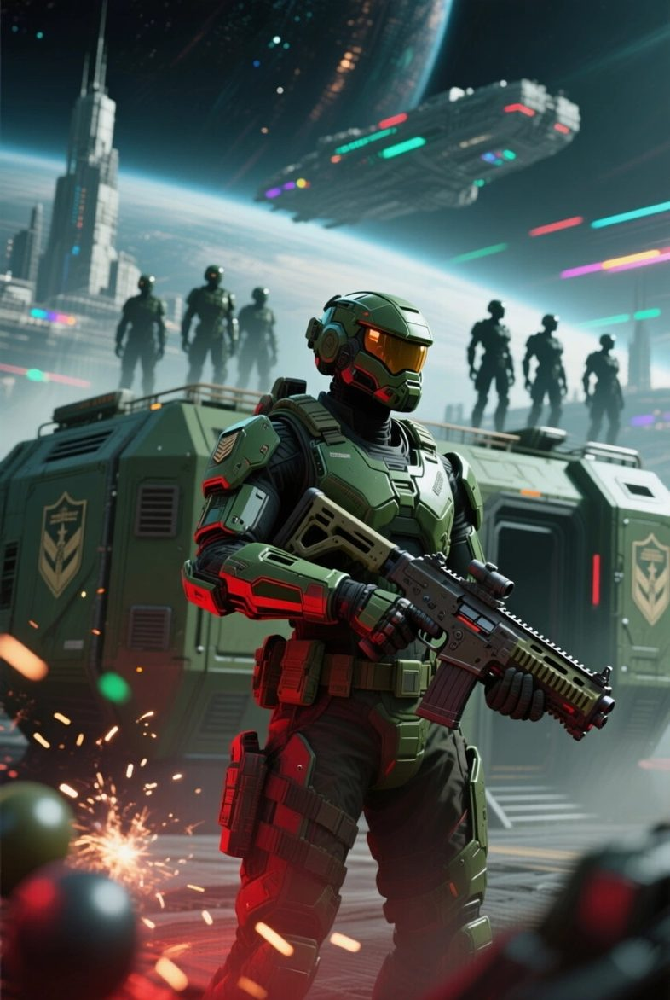
The agency is hiring
AAL Bunkerships: Tacticool Physics Squads
The galaxy is open for settlement, and somebody has to clear the way. Thugs have dug into star systems, would-be warlords taunt from behind their Command Cores, and Gold Apron will sell anyone anything.
Your hangar is full. Your squads are clumsy, brave and made of physics. Your bunkership is a fortress that flies, dives and drills. Every job moves the galaxy forward, and nothing you build is ever thrown away.